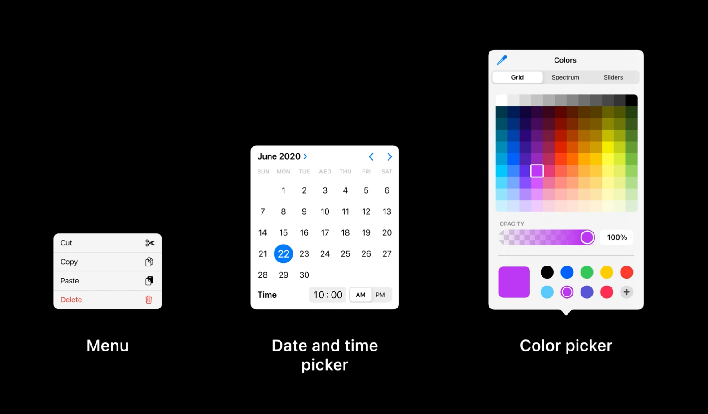
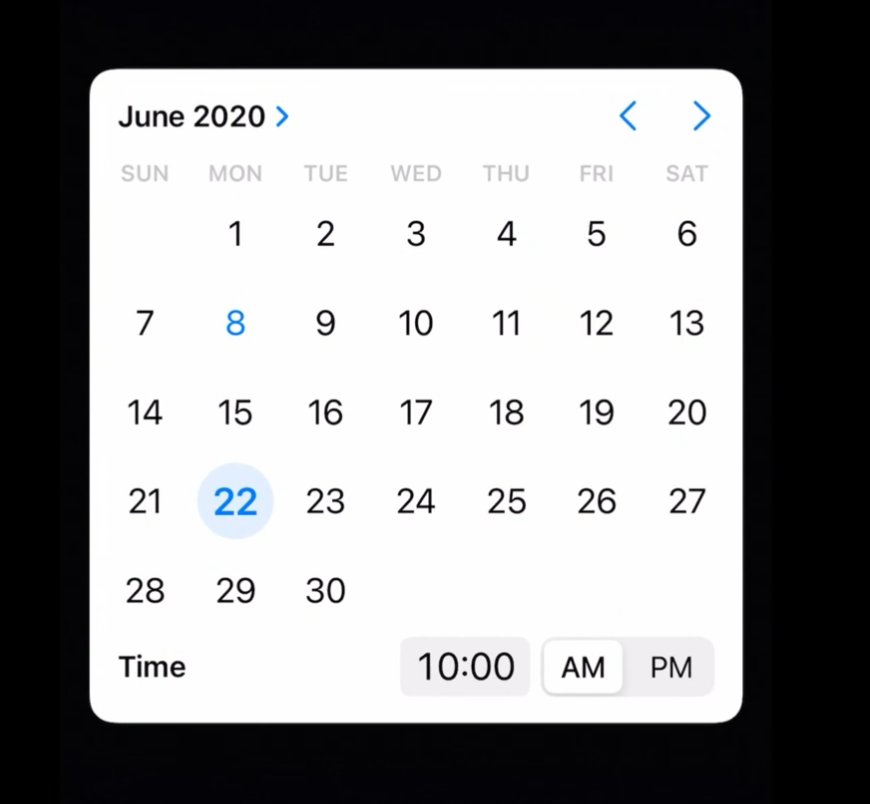

纵观 iOS 系统的发展和 iOS 设备的变化，iPhone 的屏幕变得越来越大，纵向上越来越长，iPad 上需要展示更多紧凑的内容；iOS 设备支持各种输入方式；Mac Catalyst 技术让越来越多的 app 从 iPad 转移到 Mac 上去，所以在以前的 iOS 系统中的很多组件样式不能继续适用现在的需求，这篇文章就来讲一讲在 iOS 14 和 iPadOS 14 中新增的三个组件：菜单、日期和时间选择器、颜色选择器。

目录
菜单
新的菜单样式
在 iOS 14 及其之后的版本中，通过点击一个按钮可以显示一个人们可以从中选择的列有条目或操作的下拉菜单。你可以用一个下拉菜单（简称为菜单）提供与按钮操作直接相关的条目，或者提供一个在当前情景下有用的操作列表。例如像下左图这样，在照片 app 中点击导航栏上的添加按钮就会显示一个菜单。这个样式可能会让你联想到 iOS 13 的 context menus 情景化菜单（下右图）。
为什么要从 iOS 14 开始添加这个新的菜单样式呢？在 iOS 13 中，一般情况下菜单在 iPhone 上会以 action sheet 形式呈现，在 iPad 上会以 popover 形式呈现。这些组件从很早期的 iOS 版本就开始一直伴随我们，它们为许多功能提供了帮助。
但是随着 iPhone 的屏幕变得越来越长越大，iPad app 的内容变得越来越丰富和紧凑，以前的 action sheet 和 popover 开始显现出一些劣势，在显示时他们会在背景内容上生成一层遮罩，这是一个很重的过渡效果，特别是在像 iPad 这样的更大的屏幕上。即使 action sheet 中每一个操作的文本标签很短，但每一个操作却占据了较大的空间。Action sheet 中提供的操作功能也是有限的，例如不能用于导航目的。 特别是在 iPhone 上，我总是需要大幅度的移动我的手指到屏幕的另一边去选择一个操作或者取消这个操作。
iOS 14 中新的菜单样式解决了许多问题。一开始，菜单会直接显示在你点击的按钮旁边，你在选择某个操作时就不需要大幅度地移动手指，而且人们可以马上理解菜单条目和他们执行的操作之间的关系。点击按钮、出现菜单的这个过渡十分快速和轻量化，简短顺滑，不需要让背景内容变暗。在菜单中的条目也变得更小、更精确，但仍然保持可点击，而且还对比较长的文本支持多行显示。
iOS 13 中的菜单只能被用在执行某些操作时，而 iOS 14 的新的菜单也可以用在选择和导航上。在菜单中显示的内容与情景化菜单中的操作是相似的，每个操作在左侧有一个文字标签 label，在右侧有一个可选的图标 icon，可以是 SF Symbol 或者一个自定义的图片。菜单可以添加一个标题以帮助用户理解需要做出什么选择，还可以通过添加分隔线来增加层级关系。
菜单可以从任何形式的按钮中弹出。例如，在音乐 app 中的排序按钮，点击后在弹出的菜单上保持手指不放直接移动到想要选择的操作上然后释放就可以了。或者，简单地点击按钮，再点击一个想要的操作即可完成选择。
在任何时候，我可以点击菜单外面的区域以关闭菜单，这会使菜单直接隐藏并回到之前的情景中，因此没有必要再在你的菜单中添加一个取消操作，让整个菜单只聚焦于具体想要进行的操作就好。
新的菜单样式遵从 iOS 和 iPadOS 的系统辅助功能设置，例如旁白、增强对比度、减弱动态效果、更大字体。
菜单的应用场景
菜单可以通过各种不同的方式被使用，在 iOS 14 中有几种最普遍的应用场景：消除歧义、导航、选择和展示次级操作。
消除歧义
菜单可以帮助你消除选择的歧义、明确用户操作的目的。用户带着一个目的出发，选择了一个操作，这个操作会展示一个菜单用来消除歧义，向用户进一步询问操作的目的。
例如，在照片 app 的左上角有一个添加按钮，点击按钮会展示一个菜单问你具体想要添加什么。
在备忘录 app 中，有一个操作可以在备忘录中添加一张图片，点击它会问你想要通过哪种方式添加图片。
再来看照片 app，当我编辑完成一个视频时，右下角有一个完成按钮可以保存我编辑好的视频，点击它会问我想要怎样保存它。
导航
菜单也可以被用于导航目的中。例如，在 Safari 浏览器中，我可以点击并按住后退按钮以展示一个我之前访问过的网站列表。
类似地，在系统的导航栏上，点击并按住后退按钮都可以展示一个相似的用于导航目的的菜单，用户可以直接跳转到想要去的页面。
选择
菜单还可被用于选择目的。例如在播客 app 中，点击右上角的排序按钮，菜单被用来做出选择，系统会根据你的选择调整内容的排序方式。
展示次要操作
菜单还可被用于展示一些次要操作。在界面中的一个简单的查看更多按钮就是展示一个包含一系列操作的菜单的好方式。这些操作通常没有那么重要，所以不需要突出显示在主界面上，但是它们仍然需要简单地被访问到。将二级操作放进菜单中可以让你的设计更加整洁，帮助你将注意力放在真正重要的地方。
例如在文件 app 中，界面完全聚焦于你的内容。作为比较，iOS 13 的文件 app 中有许多操作散落在界面上，这会把人们的注意力从内容上吸引走。所以通过把这些二级操作简单地整理收集到一个菜单中，整个 app 就会变得更易于使用。
又例如在信息 app 中，像下面这样把一些二级操作放进一个菜单可以让整个界面变整洁。
但你可能会问最终结果为什么是这样，而不是把导航栏上的所有操作都收入一个菜单中呢？请注意，把所有的操作都收进一个菜单中绝不是一个值得鼓励的方法，额外的一次点击会让那些重要的操作被隐藏起来，不能让用户理解在这个界面中可以做些什么。所以要在首要操作和次要操作之间找到一个平衡，决定哪些操作可以放进一个菜单，哪些操作需要突出展示。在信息 app 中，发信息这个操作是非常重要的且操作频繁的，所以不应该被收入菜单之中。
一些额外的操作并不总是需要被收入到一个查看更多的按钮中，它们也可以通过不同的手势来让菜单展现。例如在 Safari 浏览器中，点击右上角的标签按钮会让你管理你的标签页，但是当点击并按住标签按钮时，就会显示一系列与标签相关的操作。
其他使用规范
当二级操作是破坏性操作时的处理方式：如前文所提到的，新的菜单样式不再需要你大幅度移动手指到屏幕顶部选择一个操作，但是有时你会误触，而破坏性的操作会造成你输入的信息丢失。我们需要确保在执行破坏性操作之前有足够的缓冲空间，在不同的操作系统中，我们总是通过向用户二次确认来实现这个目标。为了避免不小心删掉什么东西，确认操作不能和删除操作放在同一个位置。
例如，在提醒事项 app 中，在删除一个列表时，当我点击删除操作时，一个 action sheet 会出现在屏幕底部让我二次确认是否真的要删除，我必须移动我的手指到屏幕下面以确认删除或者取消。这个操作所花费的时间和努力是值得的。
对于在菜单以外的破坏性操作，仍然推荐在 iPhone 上使用 action sheet，在 iPad 上使用 popover 来完成二次确认。比如在邮件 app 中，当你在写邮件的页面上点击左上角的取消按钮时，它就会问你是想要保存草稿还是删除草稿。在这里没有使用菜单样式，因为菜单样式会更容易误删掉草稿，而 action sheet 和 popover 可以让你的手指移动幅度更大，以防止误删草稿。所以 action sheet 这种样式并不是不再使用、可以废弃了。
所有在菜单上的这些改进都基于一直以来菜单是如何在 Mac 上如何工作的进行设计的，你可以看到你能够在相似的场景中使用这些菜单。例如消除歧义、导航。这会让你的 app 更容易从 iPad 平台转换到 Mac 平台上去。

小结
小结一下新的菜单样式：
- 它一部分代替了 iPhone 的 action sheet 和 iPad 的 popover；
- 菜单的使用场景：
- 消除歧义：通过菜单进一步向用户确认操作目的以消除歧义；
- 导航：通过菜单给出一个可以前往的页面列表来完成导航；
- 选择：通过菜单给出一个选择列表来完成选择；
- 显示次要操作：通过一个显示更多按钮或者点击并按住的操作来显示一个包含了一些二级操作的菜单；
- 破坏性操作需要二次确认，可以通过 action sheet 或者 popover 实现；
- 新的菜单样式会让你更容易把你的 app 从 iPad 带到 Mac 上去。
日期和时间选择器
以前的日期和时间选择器是下图这样的，它由多个拨轮组成，你可以调整每个拨轮以选择一个日期或者一个时间。
从 iOS 14 开始，新的日期和时间选择器变成了下图这样，包括单独的日期选择器、单独的时间选择器、日期和时间组合在一起的选择器。
让我们来具体看看它们是如何工作的。提醒事项是一个可以告诉你如何使用新的日期和时间选择器的好例子。例如，我为某个提醒事项添加一个提醒日期，你就可以看到新的日期选择器会显示出来。每一天、每一周、每一月的展示更加清晰，你可以通过左划或者右划在不同的月份之间切换，也可以通过点击某个月份/年份来更快速地选择月份和年份。
提醒事项也可以让你选择一个特定的提醒时间，在需要填写时间时，你可以看到新的时间选择器会显示出来。不再是使用拨轮，现在可以通过直接键盘输入确定时间。
不论是使用什么输入方式：触摸、Apple Pencil、键盘或者光标，新的设计让人们更容易选择日期和时间。
在 iOS 14 Beta 版本中使用了新的日期和时间选择器之后，许多用户对此发出了反对的声音，特别是对于用户经常用到的闹钟中的时间选择器，虽然键盘输入时间看似更加直观方便，但相比以前的拨轮效率提升并不大，反而失去了触控、声音、触感三者结合在一起的操作愉悦感。
在 iOS 14 Beta 5 版本中，Apple 似乎做出了「妥协」，在现有键盘输入时间的操作方式上增加了以拨轮的形式滚动选择时间的操作方式，用户可以根据自己的使用习惯选择不同的交互方式。
但新的拨轮可交互区域仅仅只有时间显示的一小块区域，操作十分受限，准确度因此也不高，或许 Apple 还是倾向于让用户使用新的键盘输入交互方式。虽然这种方式改变了用户多年以来的使用习惯，但功能上并没有打折扣，而且在使用鼠标、触控板时也更加友好，同时还与 macOS 中的时间输入交互保持基本一致，更有利于 app 转换到 Mac 平台上。
期待一下 iOS 14 正式版本中这个小小交互的最终模样。
新的日期和时间选择器可以直接插入到界面之中，就像是上面的提醒事项所展示的一样。但有时候会有一些特殊情况，在 iOS 14 中你可以通过一种更紧凑的方式展示日期和时间选择器。当你在紧凑模式下向 UIKit 请求显示一个日期选择器时，你可以获得下面这样一个按钮，它会用 app 的主颜色和一个面板效果显示一个日期，点击按钮会以模态形式展示一个新的日期选择器。

单独的时间选择器或者日期和时间混合在一起的时间选择器也是类似这样。

这种模式通常更适合不能直接在视图内显示日期和时间选择器的情况。例如，当我在通讯录中添加某个联系人的生日时，点击按钮会展示新的日期选择器，我可以根据自己的需要自由修改日期，选择好后点击外部区域以完成确认。

新的日期和时间选择器同样遵从系统的辅助功能设置。例如下图中的更大字体示例。
新的设计也统一了 iPad 和 Mac 上日期和时间选择器的样式，它们有着相同的信息，可以让 iPad app 更好地转换到 Mac 上。
小结一下：
- 改善了日期和时间选择器，有了更好地展示方法；
- 可以在视图之内使用，也可以使用新的紧凑模式；
- 因为在两个平台上具备相同的信息，所以可以更好地从 iPad 转换到 Mac 上去。
颜色选择器
iOS 14 提供了一个新的颜色选择器供你使用。你可以使用四种不同的方式选择一个颜色：网格、光谱、直接输入 RGB 色值或者从屏幕中取色。
你从屏幕中吸取的颜色总会是会显示在左下角，你可以把颜色保存到色盘上，这样就可以在其他 app 中使用了。
新的颜色选择器是让你选择你想要使用的颜色的好方式。例如，当我在 iPad 上使用 Apple Pencil 时，通过颜色选择器我就可以方便地选择我想要的颜色。
新的设计也将 iPad 和 Mac 选择颜色的样式统一，你可以更方便地把 app 从 iPad 转换到 Mac 上去。
小结一下：
- 颜色选择器是 iOS 14 开始出现的新的组件；
- 你可以通过四种方式选择你想要使用的颜色；
- 色盘中的颜色可以跨 app 使用；
- 新的颜色选择器可以帮助你的 app 从 iPad 转换到 Mac 上去。
参考链接
- Design with iOS pickers, menus and actions - WWDC 2020 - Videos - Apple Developer
- Pull-Down Menus - Controls - iOS - Human Interface Guidelines - Apple Developer
如果你觉得这篇文章对你有所帮助，欢迎请我喝杯咖啡，感谢你的支持😁